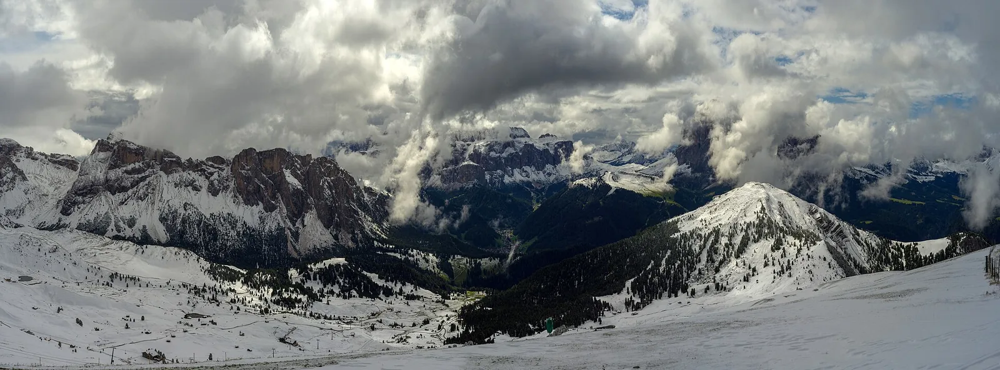

OV7 · Otros vuelos
OV7 · Andere Flüge
OV7 · Other flights
Dolomitas
Información
Las Dolomitas son una cadena montañosa del norte de los Alpes italianos: dieciocho cumbres por encima de los 3.000 metros sobre 141.903 hectáreas, repartidas en nueve áreas que se inscribieron juntas.
Son paredes verticales, farallones y una densidad altísima de valles angostos, profundos y largos, con formas glaciares y sistemas kársticos. Es un paisaje en movimiento: hay derrumbes, crecidas y avalanchas con frecuencia.
Guardan además uno de los mejores registros conservados de las plataformas carbonatadas del Mesozoico, con sus fósiles.
Information
Las Dolomitas son una cadena montañosa del norte de los Alpes italianos: dieciocho cumbres por encima de los 3.000 metros sobre 141.903 hectáreas, repartidas en nueve áreas que se inscribieron juntas.
Son paredes verticales, farallones y una densidad altísima de valles angostos, profundos y largos, con formas glaciares y sistemas kársticos. Es un paisaje en movimiento: hay derrumbes, crecidas y avalanchas con frecuencia.
Guardan además uno de los mejores registros conservados de las plataformas carbonatadas del Mesozoico, con sus fósiles.
Information
Las Dolomitas son una cadena montañosa del norte de los Alpes italianos: dieciocho cumbres por encima de los 3.000 metros sobre 141.903 hectáreas, repartidas en nueve áreas que se inscribieron juntas.
Son paredes verticales, farallones y una densidad altísima de valles angostos, profundos y largos, con formas glaciares y sistemas kársticos. Es un paisaje en movimiento: hay derrumbes, crecidas y avalanchas con frecuencia.
Guardan además uno de los mejores registros conservados de las plataformas carbonatadas del Mesozoico, con sus fósiles.
La UICN evalúa las Dolomitas como «bueno, con algunas preocupaciones». En 2015 se aprobó una estrategia general de manejo para todo el sitio, elaborada con las administraciones locales y las comunidades, y fue un paso importante.
Aun así, la construcción de infraestructura turística sigue siendo una amenaza para los valores del sitio, agravada ahora por el cambio climático: eventos meteorológicos extremos e inestabilidad hidrogeológica creciente. Hay proyectos para ampliar instalaciones de esquí, incluso cerca de algunos componentes del área protegida.
La UICN evalúa las Dolomitas como «bueno, con algunas preocupaciones». En 2015 se aprobó una estrategia general de manejo para todo el sitio, elaborada con las administraciones locales y las comunidades, y fue un paso importante.
Aun así, la construcción de infraestructura turística sigue siendo una amenaza para los valores del sitio, agravada ahora por el cambio climático: eventos meteorológicos extremos e inestabilidad hidrogeológica creciente. Hay proyectos para ampliar instalaciones de esquí, incluso cerca de algunos componentes del área protegida.
La UICN evalúa las Dolomitas como «bueno, con algunas preocupaciones». En 2015 se aprobó una estrategia general de manejo para todo el sitio, elaborada con las administraciones locales y las comunidades, y fue un paso importante.
Aun así, la construcción de infraestructura turística sigue siendo una amenaza para los valores del sitio, agravada ahora por el cambio climático: eventos meteorológicos extremos e inestabilidad hidrogeológica creciente. Hay proyectos para ampliar instalaciones de esquí, incluso cerca de algunos componentes del área protegida.
Fuentes
Quellen
Sources
- UICN, Perspectiva del Patrimonio Mundial (evaluación 2025), The Dolomites — https://worldheritageoutlook.iucn.org/explore-sites/dolomites
Galería
Galerie
Gallery


Fuentes
Quellen
Sources
- UNESCO, Centro del Patrimonio Mundial, The Dolomites — https://whc.unesco.org/en/list/1237/ consultado 2026-10-06abgerufen 2026-10-06accessed 2026-10-06